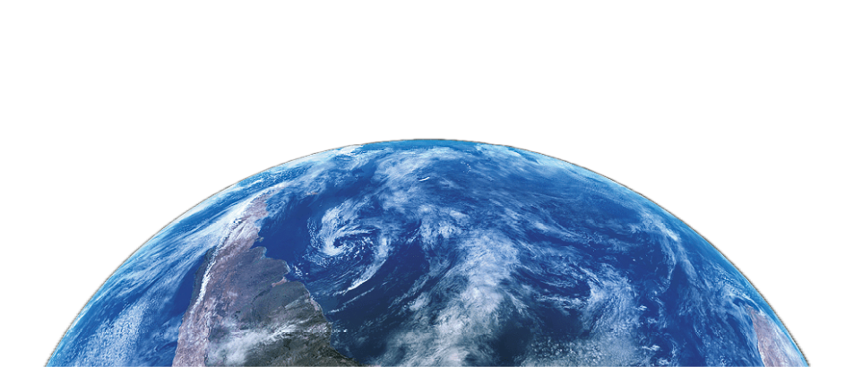

00:00/ 00:10
Lunar Phases
The lunar phases (the New Moon, first Quarter, Full Moon and Last Quarter)
return cyclically.
Full Moon
The Moon continues growing,
and in another week we can
see a bright disc. This phase is
called the Full Moon.
First quarter
The crescent Moon starts to 'grow',
its shape increasingly resembling
the capital letter D. In about one
week, it reaches the First Quarter.
Last quarter
New Moon
When the Moon is between the Sun and the Earth, the Sun illuminates the side facing away from the Earth; therefore, the part that faces us is hardly visible. This phase is called the New Moon.
Then, as the Moon orbits the Earth, its visible part decreases and it starts to look like the letter C.
